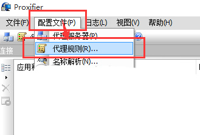
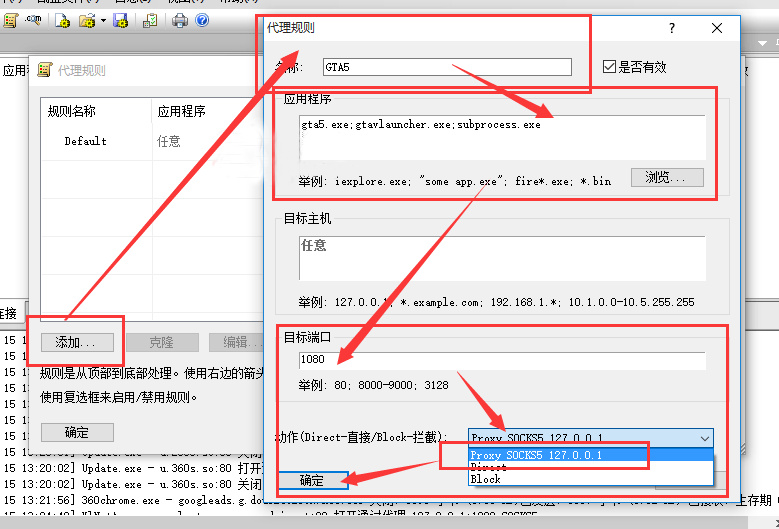

Proxifier实现影梭全局代理玩美服/韩服/日服/台服LOL/GTA5教程
首先，您应该拥有一个 bluevpn pro 账号，然后再简单配置一下客户端，即可畅享网络，正版 bluevpn pro 账号从 这里 获得。
继续阅读您需要按上面方式配置好 Shadowsocks 客户端，并且设置好系统代理模式。
1、Proxifier 安装设置好，在打开的界面，依次点击「菜单栏」-->>「配置文件」-->>「代理服务器」
2、添加 >> 地址填写「127.0.0.1」 >> 端口默认填写「1080」 >> 协议选择 socks版本5 >> 一路「确定」。如图：

代理规则设置：
1、打开 配置文件 >> 代理规则2

2、添加代理规则名称自定义（根据自己喜好设置） 如图所示；<
3、添加需要代理的应用程序，以GTA5 VPN演示，在应用程序里面加入GTA5的程序【gta5.exe;gtavlauncher.exe;subprocess.exe】，其他游戏步骤相同。可以通过【浏览】按钮选择需要代理的程序；
4、添加「影梭」客户端里面的本地代理端口，默认一般是1080；
5、选择动作：Proxy SOCKS5 127.0.0.1（这个动作选项是步骤1设置完成后会出现的）。

然后再一路确定保存，登录游戏看看？是否已经OK拉？